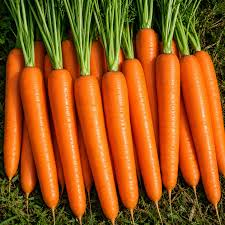

Horta Escolar Viva

A cenoura Nantes (Daucus carota) é uma variedade muito apreciada por produzir raízes cilíndricas, lisas e de coloração alaranjada intensa. É uma das hortaliças mais consumidas no mundo, destacando-se pelo sabor adocicado e pelo elevado valor nutricional.
Originária da Ásia Central, sendo cultivada atualmente em praticamente todo o mundo.
Quando floresce, atrai abelhas, borboletas e diversos insetos polinizadores.
Raiz.
A variedade Nantes é uma das mais cultivadas devido ao formato uniforme das raízes e ao excelente sabor.
Suas flores fornecem alimento para polinizadores e seu cultivo contribui para a diversidade da horta escolar.
Pode ser cultivada durante praticamente todo o ano, preferindo temperaturas amenas.
Escaneie o QR Code para acessar esta página pelo celular.